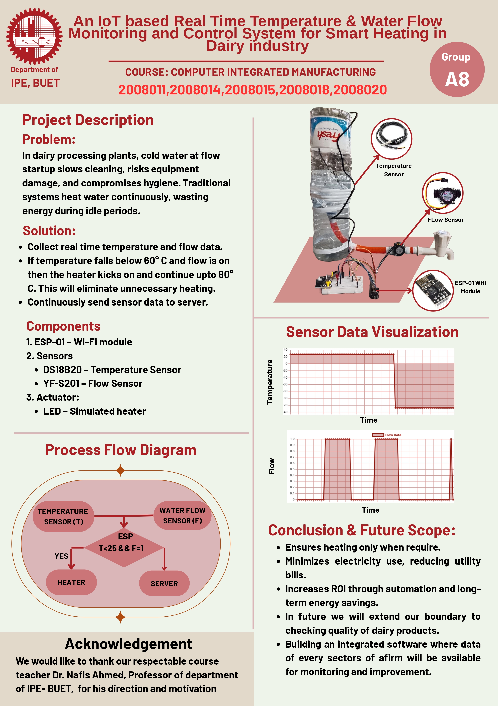

In dairy processing plants, cold water at flow startup slows cleaning, risks equipment damage, and compromises hygiene. Traditional systems heat water continuously, wasting energy during idle periods.
| Device / Component | Task / Function |
|---|---|
| DS18B20 | Temperature measurement |
| YF-S201 Flow Sensor | Detects water flow |
| ESP-01 (ESP8266) | Wi-Fi microcontroller, logic, and server upload |
| LED | Simulated heater ON/OFF indicator |

#include <ESP8266WiFi.h>
#include <ESP8266HTTPClient.h>
#include <ESP8266WebServer.h>
#include <OneWire.h>
#include <DallasTemperature.h>
#define TEMP_LOW 25
#define TEMP_HIGH 30
#define FLOW_PIN 3 // RX (GPIO3)
#define TEMP_PIN 2 // GPIO2
#define HEATER_LED 0 // GPIO0
const char* ssid = "raihan";
const char* password = "12345678";
OneWire oneWire(TEMP_PIN);
DallasTemperature sensors(&oneWire);
ESP8266WebServer server(80);
volatile unsigned long pulseCount = 0;
bool flowDetected = false;
float temperature = 0;
bool heaterOn = false;
unsigned long lastCheck = 0;
void IRAM_ATTR pulseCounter() {
pulseCount++;
}
void handleRoot() {
String html = "<!DOCTYPE html><html><head><meta charset='UTF-8'>";
html += "<meta http-equiv='refresh' content='2'>";
html += "<title>Smart Heater Monitor</title></head><body style='font-family:sans-serif;'>";
html += "<h2>Smart Flow-Activated Heater</h2>";
html += "<p><strong>Temperature:</strong> " + String(temperature, 2) + " °C</p>";
html += "<p><strong>Flow Detected:</strong> " + String(flowDetected ? "YES" : "NO") + "</p>";
html += "<p><strong>Heater Status:</strong> <span style='color:" + String(heaterOn ? "green" : "red") + "'>" + (heaterOn ? "ON" : "OFF") + "</span></p>";
html += "<p><small>Wi-Fi: <strong>" + String(ssid) + "</strong></small></p>";
html += "</body></html>";
server.send(200, "text/html", html);
}
void setup() {
pinMode(FLOW_PIN, INPUT);
pinMode(HEATER_LED, OUTPUT);
digitalWrite(HEATER_LED, LOW);
sensors.begin();
attachInterrupt(digitalPinToInterrupt(FLOW_PIN), pulseCounter, RISING);
WiFi.begin(ssid, password);
while (WiFi.status() != WL_CONNECTED) { delay(500); }
server.on("/", handleRoot);
server.begin();
}
void loop() {
server.handleClient();
unsigned long now = millis();
if (now - lastCheck >= 2000) {
lastCheck = now;
sensors.requestTemperatures();
temperature = sensors.getTempCByIndex(0);
noInterrupts();
unsigned long count = pulseCount;
pulseCount = 0;
interrupts();
flowDetected = (count > 0);
if (flowDetected && temperature < TEMP_LOW) {
digitalWrite(HEATER_LED, HIGH);
heaterOn = true;
} else if (!flowDetected || temperature >= TEMP_HIGH) {
digitalWrite(HEATER_LED, LOW);
heaterOn = false;
}
if (WiFi.status() == WL_CONNECTED) {
WiFiClient client;
HTTPClient http;
http.begin(client, "http://ipe20-buet.top/get_data.php?g=groupA8&sn=Flow&sd=" + String(flowDetected ? 1 : 0) + "&p=passA8");
http.GET(); http.end(); delay(200);
http.begin(client, "http://ipe20-buet.top/get_data.php?g=groupA8&sn=Temperature&sd=" + String(temperature, 2) + "&p=passA8");
http.GET(); http.end(); delay(200);
http.begin(client, "http://ipe20-buet.top/get_data.php?g=groupA8&sn=Heater&sd=" + String(heaterOn ? 1 : 0) + "&p=passA8");
http.GET(); http.end(); delay(200);
}
}
}